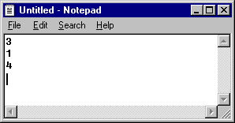

Summing Three Numbers from a File¶
First, create a file in Notepad containing three integers separated
by some whitespace. Save it as 3nums.txt in the same folder
as your code.

Then write a program that reads three integers from the file
3nums.txt and displays (on the screen) the total of the
integers.
Name your program sum_from_file.py
Reading numbers from file "3nums.txt"... done.
3 + 1 + 4 = 8
©2021 Daniel Gallo
This assignment is licensed under a Creative Commons Attribution-NonCommercial-ShareAlike 3.0 United States License.

Adapted for Python from Graham Mitchell’s Programming By Doing